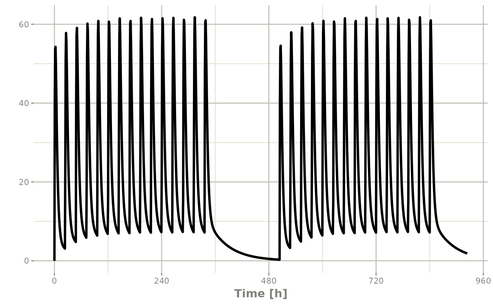
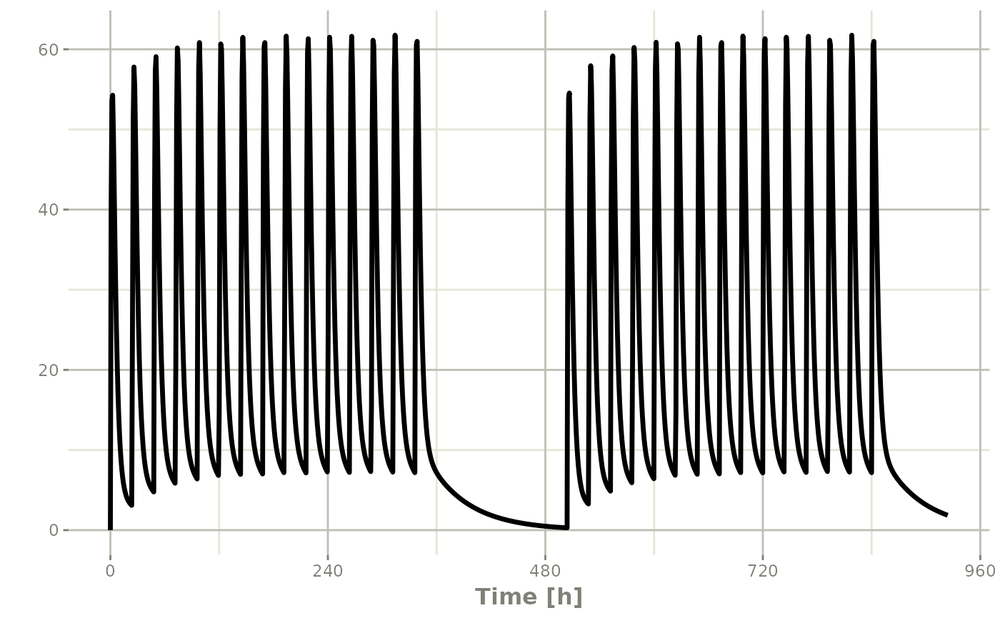

Event Table Function
Usage
et(x, ..., envir = parent.frame())
# S3 method for rxode2
et(x, ..., envir = parent.frame())
# S3 method for rxSolve
et(x, ..., envir = parent.frame())
# S3 method for rxParams
et(x, ..., envir = parent.frame())
# S3 method for default
et(
x,
...,
time,
amt,
evid,
cmt,
ii,
addl,
ss,
rate,
dur,
until,
id,
amountUnits,
timeUnits,
addSampling,
envir = parent.frame(),
by = NULL,
length.out = NULL
)Arguments
- x
This is the first argument supplied to the event table. This is named to allow
etto be used in a pipe-line with arbitrary objects.- ...
Times or event tables. They can also be one of the named arguments below.
- envir
the
environmentin whichexpris to be evaluated. May also beNULL, a list, a data frame, a pairlist or an integer as specified tosys.call.- time
Time is the time of the dose or the sampling times. This can also be unspecified and is determined by the object type (list or numeric/integer).
- amt
Amount of the dose. If specified, this assumes a dosing record, instead of a sampling record.
- evid
Event ID; This can be:
Numeric Value Description 0 An observation. This can also be specified as evid=obs1 A dose observation. This can also be specified as evid=dose2 A non-dose event. This can also be specified as evid=other3 A reset event. This can also be specified as evid=reset.4 Dose and reset event. This can also be specified as evid=doseResetorevid=resetDoseNote a reset event resets all the compartment values to zero and turns off all infusions.
- cmt
Compartment name or number. If a number, this is an integer starting at 1. Negative compartments turn off a compartment. If the compartment is a name, the compartment name is changed to the correct state/compartment number before running the simulation. For a compartment named "-cmt" the compartment is turned off.
Can also specify `cmt` as `dosing.to`, `dose.to`, `doseTo`, `dosingTo`, and `state`.- ii
When specifying a dose, this is the inter-dose interval for
ss,addlanduntiloptions (described below).- addl
The number of additional doses at a inter-dose interval after one dose.
- ss
Steady state flag; It can be one of:
Value Description 0 This dose is not a steady state dose 1 This dose is a steady state dose with the between/inter-dose interval of ii2 Superposition steady state When
ss=2the steady state dose that uses the super-position principle to allow more complex steady states, like 10 mg in the morning and 20 mg at night, or dosing at 8 am 12 pm and 8 pm instead of every 12 hours. Since it uses the super positioning principle, it only makes sense when you know the kinetics are linear.All other values of
SSare currently invalid.- rate
When positive, this is the rate of infusion. Otherwise:
Value Description 0 No infusion is on this record -1 Modeled rate (in rxode2: rate(cmt) =); Can beet(rate=model).-2 Modeled duration (in rxode2: dur(cmt) =); Can beet(dur=model)oret(rate=dur).When a modeled bioavailability is applied to positive rates (
rate> 0), the duration of infusion is changed. This is because the data specify the rate and amount, the only think that modeled bioavailability can affect is duration.If instead you want the modeled bioavailability to increase the rate of infusion instead of the duration of infusion, specify the
durinstead or model the duration withrate=2.- dur
Duration of infusion. When
amtanddurare specified the rate is calculated from the two data items. Whenduris specified instead ofrate, the bioavailability changes will increase rate instead of duration.- until
This is the time until the dosing should end. It can be an easier way to figure out how many additional doses are needed over your sampling period.
- id
A integer vector of IDs to add or remove from the event table. If the event table is identical for each ID, then you may expand it to include all the IDs in this vector. All the negative IDs in this vector will be removed.
- amountUnits
The units for the dosing records (
amt)- timeUnits
The units for the time records (
time)- addSampling
This is a boolean indicating if a sampling time should be added at the same time as a dosing time. By default this is
FALSE.- by
When there are no observations in the event table, this is the amount to increment for the observations between
fromandto.- length.out
The number of observations to create if there isn't any observations in the event table. By default this is 200.
References
Wang W, Hallow K, James D (2015). "A Tutorial on rxode2: Simulating Differential Equation Pharmacometric Models in R." CPT: Pharmacometrics \& Systems Pharmacology, 5(1), 3-10. ISSN 2163-8306, <URL: https://www.ncbi.nlm.nih.gov/pmc/articles/PMC4728294/>.
See also
eventTable, add.sampling,
add.dosing, et,
etRep, etRbind,
rxode2
Examples
# \donttest{
library(rxode2)
library(units)
## Model from rxode2 tutorial
mod1 <-rxode2({
KA=2.94E-01;
CL=1.86E+01;
V2=4.02E+01;
Q=1.05E+01;
V3=2.97E+02;
Kin=1;
Kout=1;
EC50=200;
C2 = centr/V2;
C3 = peri/V3;
d/dt(depot) =-KA*depot;
d/dt(centr) = KA*depot - CL*C2 - Q*C2 + Q*C3;
d/dt(peri) = Q*C2 - Q*C3;
d/dt(eff) = Kin - Kout*(1-C2/(EC50+C2))*eff;
});
#>
## These are making the more complex regimens of the rxode2 tutorial
## bid for 5 days
bid <- et(timeUnits="hr") %>%
et(amt=10000,ii=12,until=set_units(5, "days"))
## qd for 5 days
qd <- et(timeUnits="hr") %>%
et(amt=20000,ii=24,until=set_units(5, "days"))
## bid for 5 days followed by qd for 5 days
et <- seq(bid,qd) %>% et(seq(0,11*24,length.out=100));
bidQd <- rxSolve(mod1, et)
plot(bidQd, C2)
 ## Now Infusion for 5 days followed by oral for 5 days
## note you can dose to a named compartment instead of using the compartment number
infusion <- et(timeUnits = "hr") %>%
et(amt=10000, rate=5000, ii=24, until=set_units(5, "days"), cmt="centr")
qd <- et(timeUnits = "hr") %>% et(amt=10000, ii=24, until=set_units(5, "days"), cmt="depot")
et <- seq(infusion,qd)
infusionQd <- rxSolve(mod1, et)
plot(infusionQd, C2)
## Now Infusion for 5 days followed by oral for 5 days
## note you can dose to a named compartment instead of using the compartment number
infusion <- et(timeUnits = "hr") %>%
et(amt=10000, rate=5000, ii=24, until=set_units(5, "days"), cmt="centr")
qd <- et(timeUnits = "hr") %>% et(amt=10000, ii=24, until=set_units(5, "days"), cmt="depot")
et <- seq(infusion,qd)
infusionQd <- rxSolve(mod1, et)
plot(infusionQd, C2)
 ## 2wk-on, 1wk-off
qd <- et(timeUnits = "hr") %>% et(amt=10000, ii=24, until=set_units(2, "weeks"), cmt="depot")
et <- seq(qd, set_units(1,"weeks"), qd) %>%
add.sampling(set_units(seq(0, 5.5,by=0.005),weeks))
wkOnOff <- rxSolve(mod1, et)
plot(wkOnOff, C2)

## You can also repeat the cycle easily with the rep function
qd <-et(timeUnits = "hr") %>% et(amt=10000, ii=24, until=set_units(2, "weeks"), cmt="depot")
et <- etRep(qd, times=4, wait=set_units(1,"weeks")) %>%
add.sampling(set_units(seq(0, 12.5,by=0.005),weeks))
repCycle4 <- rxSolve(mod1, et)
plot(repCycle4, C2)
## 2wk-on, 1wk-off
qd <- et(timeUnits = "hr") %>% et(amt=10000, ii=24, until=set_units(2, "weeks"), cmt="depot")
et <- seq(qd, set_units(1,"weeks"), qd) %>%
add.sampling(set_units(seq(0, 5.5,by=0.005),weeks))
wkOnOff <- rxSolve(mod1, et)
plot(wkOnOff, C2)

## You can also repeat the cycle easily with the rep function
qd <-et(timeUnits = "hr") %>% et(amt=10000, ii=24, until=set_units(2, "weeks"), cmt="depot")
et <- etRep(qd, times=4, wait=set_units(1,"weeks")) %>%
add.sampling(set_units(seq(0, 12.5,by=0.005),weeks))
repCycle4 <- rxSolve(mod1, et)
plot(repCycle4, C2)
 # }
# }